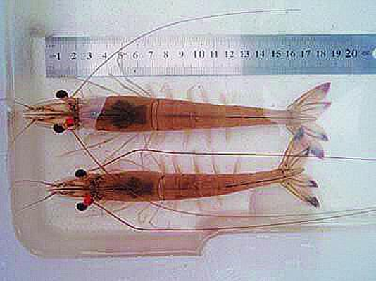

欢迎光临国家海水鱼产业技术体系信息化管理平台

邮箱
咨询热线：400-666-8888
欢迎光临国家海水鱼产业技术体系信息化管理平台
邮箱
咨询热线：400-666-8888
成果展示
发布日期：2017-04-23 16:31:55 总浏览量：228 来源：中国山东网
中国对虾“黄海3号”是我国培育的第一个水产抗逆新品种，2013年通过国家水产原良种审定委员会审定，获水产新品种证书（新品种登记号：GS-01-002-2013），2014年被农业部确定为水产主导推广品 种。在相同培育和养殖条件下，新品种耐氨氮胁迫能力强，仔虾Ⅰ期成活率提高21.2%；生长速度快，收获对虾平均体重较商品苗种提高11.8%，规格整齐；养殖成活率高，池塘养殖成活率提高15.2%，池塘连 片养殖成功率达90%。
自2010年以来中国对虾“黄海3号”累计扩繁仔虾苗种10亿尾以上，无节幼体30亿尾以上，在山东、河北、天津、辽宁和江苏等地进行示范推广养殖。通过苗种扩繁带动，合计推广养殖面积5万亩左右，取 得了良好的经济效益和社会效益。 目前，中国对虾“黄海3号”每年可培育优质亲虾10000尾以上，仔虾苗种5亿尾以上，适宜在我国江苏及以北沿海地区养殖。
